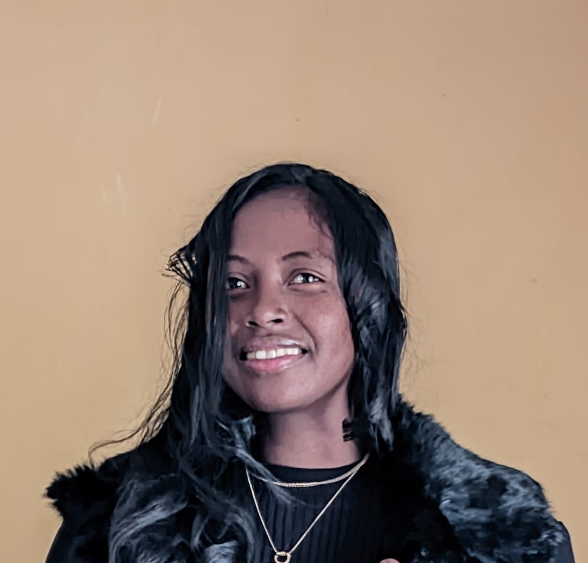

LUCIA RASOANIRINA
Développeuse Full-Stack & Mobile
Ankofafa, Fianarantsoa, Madagascar · Née le 17/10/2005
+261 38 39 702 36 · luciarasoanirina8@gmail.com
github.com/Lucia-RASOANIRINA · lucia-rasoanirina-portfolio.netlify.app

Profil
Développeuse Full-Stack et mobile (Flutter), entrée dans le monde de la technologie en 2023. Stage de trois mois chez LovaTech : deux applications mobiles réalisées et premiers pas en DevOps.
Formation
Licence en Développement d'Applications (3e année)2023 – présent
EMIT, Université de Fianarantsoa
Formation Linux Essentials
Bases du système Linux et de la ligne de commande
Baccalauréat série C2023
Lycée FMJ, Talatamaty, Fianarantsoa
Expériences professionnelles
Stage – Développeuse mobile Flutter, LovaTech03/08/2026 – 31/10/2026
- MajiChrono : application de livraison à la demande (profils client, livreur et administration), suivi cartographique, preuves photo, signatures, mode hors ligne. Flutter, Riverpod, Laravel, MySQL.
- AllGo : version mobile de la plateforme de commerce social Janga Market. Flutter, NestJS, Prisma, MySQL, Redis.
- Initiation au DevOps : Docker, GitHub Actions, déploiement sur DirectAdmin et o2switch.
Stage de L2 – Développeuse full-stack2 mois
Application de gestion d'une maison de production audio.
Hackathons et projets de groupe
MASOHackathon FANILO 2026
Plateforme web et PWA d'aide à la vérification de contenus pour les journalistes. React, Supabase, FastAPI.
MianaraScience Hack Day
Digitalisation du Baccalauréat avec contrôle anti-fraude par QR code. Flutter, SQLite, Next.js.
Fianar Smart CityHackathon Youth Computing
Plateforme citoyenne de signalements urbains avec IA de priorisation. Next.js, NestJS, PostgreSQL.
UrbanFlow IAHackathon EMIHACK
Copilote de trafic urbain avec IA pour Fianarantsoa. Flutter, OpenStreetMap, React, Python.
Gestion EMITProjet académique
Gestion des salles et des emplois du temps avec détection des conflits. ASP.NET Core, PostgreSQL, React.
Compétences techniques
Mobile : Flutter, Dart, Riverpod, SQLite / Drift, PWA
Frontend : React, Vue.js, Next.js, TypeScript, Tailwind CSS
Backend : PHP / Laravel, Node.js, NestJS, Python / FastAPI, ASP.NET Core, Prisma
Bases de données : MySQL, PostgreSQL, MongoDB, Supabase
DevOps (débutante) : Docker, GitHub Actions, DirectAdmin, o2switch
Outils : Git, Figma, Vercel, Netlify, Render, Neon
Langues
Malagasy : langue maternelle · Français : DELF B2 · Anglais : B2
Certificats et attestations
- Attestation de stage – Développeuse mobile (LovaTech, 2026)
- Attestation de stage – Développeuse full-stack (L2)
- Certification de participation en hackathon · Certificat en informatique bureautique · Attestation Pix
Projets personnels
'Parentia (Vue 3, Spring Boot) · OuraTable (Laravel, Vue.js) · FeedbackPro (application mobile) · Garage Pro · UltimateChild · Portfolio 3D (React)
Centres d'intérêt
Cinéma, séries, basket-ball, cuisine, sport